Environmental Economics
ECON 1101 · Autumn 2026
Sources and attribution (1 of 2)
Any use of these materials should cite those original sources.
Papers discussed in this deck:
- Zou, Eric (2021). “Unwatched Pollution: The Effect of Intermittent Monitoring on Air Quality.” American Economic Review 111(7): 2101–2126.
- Mu, Rubin, and Zou (2026). “What’s Missing in Environmental Self-Monitoring: Evidence from Strategic Shutdowns of Pollution Monitors.” Review of Economics and Statistics 108(3): 597–612.
- Deryugina, Heutel, Miller, Molitor, and Reif (2019). “The Mortality and Medical Costs of Air Pollution: Evidence from Changes in Wind Direction.” American Economic Review 109(12): 4178–4219.
- Isen, Rossin-Slater, and Walker (2017). “Every Breath You Take—Every Dollar You’ll Make: The Long-Term Consequences of the Clean Air Act of 1970.” Journal of Political Economy 125(3): 848–902.
- Chay and Greenstone (2005). “Does Air Quality Matter? Evidence from the Housing Market.” Journal of Political Economy 113(2): 376–424.
- Bedi, Nakaguma, Restrepo, and Rieger (2021). “Particle Pollution and Cognition: Evidence from Sensitive Cognitive Tests in Brazil.” Journal of the Association of Environmental and Resource Economists 8(3): 443–474.
- Ebenstein, Lavy, and Roth (2016). “The Long-Run Economic Consequences of High-Stakes Examinations: Evidence from Transitory Variation in Pollution.” American Economic Journal: Applied Economics 8(4): 36–65.
- Keiser and Shapiro (2019). “Consequences of the Clean Water Act and the Demand for Water Quality.” Quarterly Journal of Economics 134(1): 349–396.
- Hollingsworth and Rudik (2021). “The Effect of Leaded Gasoline on Elderly Mortality: Evidence from Regulatory Exemptions.” American Economic Journal: Economic Policy 13(3): 345–373.
Sources and attribution (2 of 2)
Papers discussed in this deck (continued):
- Hollingsworth, Karbownik, Thomasson, and Wray (2024). “The Gift of a Lifetime: The Hospital, Modern Medicine, and Mortality.” American Economic Review 114(7): 2201–2238.
- Jageler, Adler, Duchovny, and Herrnstadt (2024). “Effects of Extreme Temperatures From Climate Change on the Medicare Population: Preliminary Results.” Congressional Budget Office, Publication 60282 (May 2024).
- Burgess, Deschênes, Donaldson, and Greenstone (2017). “Weather, Climate Change and Death in India.” Working paper, London School of Economics and University of Chicago.
- Giglio, Maggiori, and Stroebel (2015). “Very Long-Run Discount Rates.” Quarterly Journal of Economics 130(1): 1–53.
- Doyle and Samphantharak (2008). “$2.00 Gas! Studying the Effects of a Gas Tax Moratorium.” Journal of Public Economics 92(3–4): 869–884.
- Li, Linn, and Muehlegger (2014). “Gasoline Taxes and Consumer Behavior.” American Economic Journal: Economic Policy 6(4): 302–342.
- Ito, Koichiro (2014). “Do Consumers Respond to Marginal or Average Price? Evidence from Nonlinear Electricity Pricing.” American Economic Review 104(2): 537–563.
- Allcott, Hunt (2015). “Site Selection Bias in Program Evaluation.” Quarterly Journal of Economics 130(3): 1117–1165.
- Currie, Voorheis, and Walker (2023). “What Caused Racial Disparities in Particulate Exposure to Fall? New Evidence from the Clean Air Act and Satellite-Based Measures of Air Quality.” American Economic Review 113(1): 71–97.
Much of the material in these notes is adapted from other sources — in particular Raj Chetty’s course “Using Big Data to Solve Economic and Social Problems” (used with permission, along with André Kurmann’s Drexel adaptation).
Other sources: Beyond the published research, this deck draws on Raj Chetty’s “Using Big Data to Solve Economic and Social Problems” lecture slides and notes (explicitly credited on the three-steps-to-the-SCC, two-extreme-views-of-discounting, 50%-emissions-cut, and Opower/Cialdini social-norms slides), the Stern Review (2006) and Nordhaus’s DICE model for the discount-rate comparison, official U.S. social-cost-of-carbon values (Obama-era Interagency Working Group ~$40/ton, Trump-era 7% rate ~$5/ton, EPA’s 2023 update ~$190/ton) and EPA retrospective Clean Air Act cost-benefit analyses, EPA ground-monitor and satellite PM2.5 data products (Di et al.; NASA MERRA-2, including the Houston daily-PM2.5 map), Medicare claims and restricted CDC Vital Statistics mortality files plus CDC blood-lead guidance, and non-academic visual material — early-1990s newspaper clippings on Clean Air Act costs (“Who Pays for the Clean Air Act?” and the New York Times “E.P.A. Advocating Higher Standards to Clean the Air”), a photograph of Sunoco leaded and unleaded race-fuel drums, and a screenshot of the Keiser–Shapiro QJE article page.
In this unit
Environment I: pollution and health
Environment II: leaded gasoline, NASCAR, and event studies
Environment III: climate change and cost-benefit analysis
Environment IV: environmental policy in practice
Environment I: pollution and health
Today’s question
Markets are great at delivering gasoline, food, and phones. Why are they so bad at delivering clean air?
- The answer is a single concept: the externality
- Then the empirical half: how much does dirty air actually hurt us?
- Two headline studies: acute deaths today, and earnings 30 years later
Where we’re headed
- Why pollution breaks the logic of markets — private vs. social cost
- How economists measure pollution (monitors, satellites, and cheaters)
- Deryugina et al. (2019): using the wind as a natural experiment
- Isen, Rossin-Slater, and Walker: the 1970 Clean Air Act and earnings 30 years later
- Why the optimal amount of pollution is not zero
A new kind of problem
Welcome to environmental economics
- Economics: how scarce resources get allocated
- “Easy” for goods with a price — markets do the work
- But how often do you buy clean air? A nice park? A stable climate?
- Environmental economics is about scarce things without prices — and about causal inference, because pollution is not randomly assigned
What is an externality?
- Externality: one person’s behavior directly affects another person’s well-being
- You drive a car that emits pollution → everyone pays a price
- The driver enjoys the trip and pays for the gas — but not for the asthma attack across town
- This is different from everything we’ve studied so far
Why externalities change the game
- Income, education, health: benefits accrue mostly to the individual — think class size and test scores
- With externalities we must measure impacts on everyone, not just the person acting
- And the policy goal flips: we want to move people away from what is privately best for them
- Contrast with college outreach: there we helped people do what was already in their own interest
Method spotlight: private vs. social cost
The market for gasoline
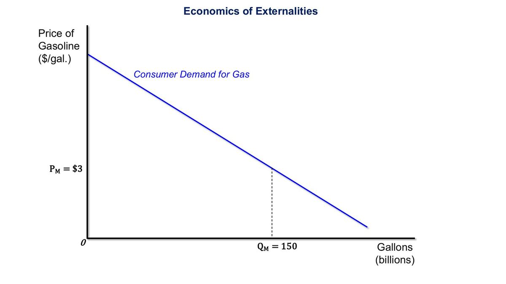
The market for gasoline
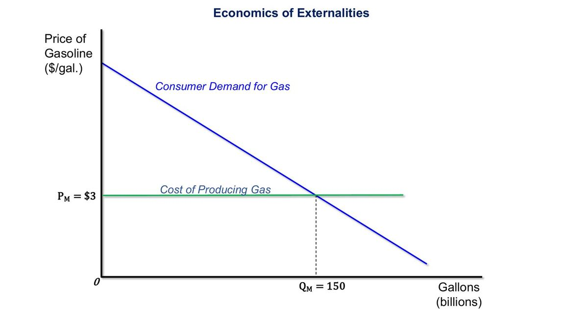
Reading the gasoline diagram
- Demand curve: consumers’ willingness to pay for each gallon
- Supply curve: the private cost of producing each gallon
- Market equilibrium: about $3 per gallon, 150 billion gallons
- So far, the standard supply-and-demand story — markets look great
Now add the pollution
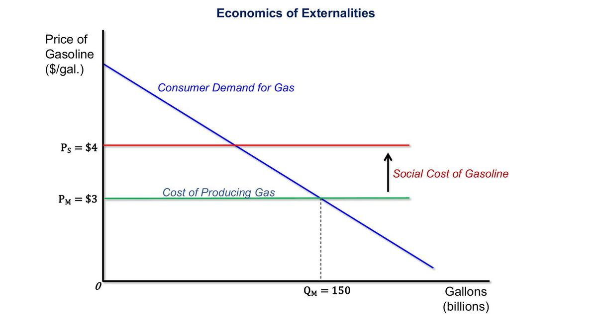
What the social cost curve says
- Every gallon burned also creates damage the buyer never pays for
- Marginal social cost = private cost + external damage
- Draw the social cost curve above the supply curve
- Where it crosses demand: $4 per gallon and only 100 billion gallons
The market overshoots
- Society’s best outcome: 100 billion gallons
- The market delivers: 150 billion gallons
- For every gallon between 100 and 150, the social cost exceeds the benefit to the consumer — society loses on each one
- Nobody is evil here: prices simply leave out the damage, so people rationally pollute too much
TopHat: Why does the market produce too much gas?
In the diagram, the market produces 150 billion gallons instead of the socially best 100 billion. Why?
- A: Consumers don’t value gasoline correctly
- B: Producers face only the private cost, not the damage to others
- C: The government sets the price too low
- D: Demand curves slope downward
Two key questions in environmental economics
Question 1: How can we measure the social cost of pollution?
Two key questions in environmental economics
Question 2: What policies can we use to reduce pollution and improve the environment?
Measuring pollution
From smokestack to hospital: the chain of impact
- Emission source → environmental concentration → human exposure → health response
- Every arrow is a place where measurement can fail:
- pollution varies block by block and hour by hour
- people differ in susceptibility
- some damage shows up decades later (latency)
- Our star pollutant: PM2.5 — fine particles small enough to pass from lungs into the bloodstream
How might we measure pollution?
- Direct measurement: EPA ground monitors — accurate, but sparse
- Satellites: estimates for every location, every day (Di et al., 2000+; MERRA-2, 1980+)
- Inventories: firms self-report what they emit
- Model-based estimation: atmospheric models fill in the gaps
- No single source is perfect — good papers cross-check them
Satellites vs. ground monitors
Satellite estimates track monitors well at typical U.S. levels
The far-left column is the point: many counties have no monitor at all — satellites still see them
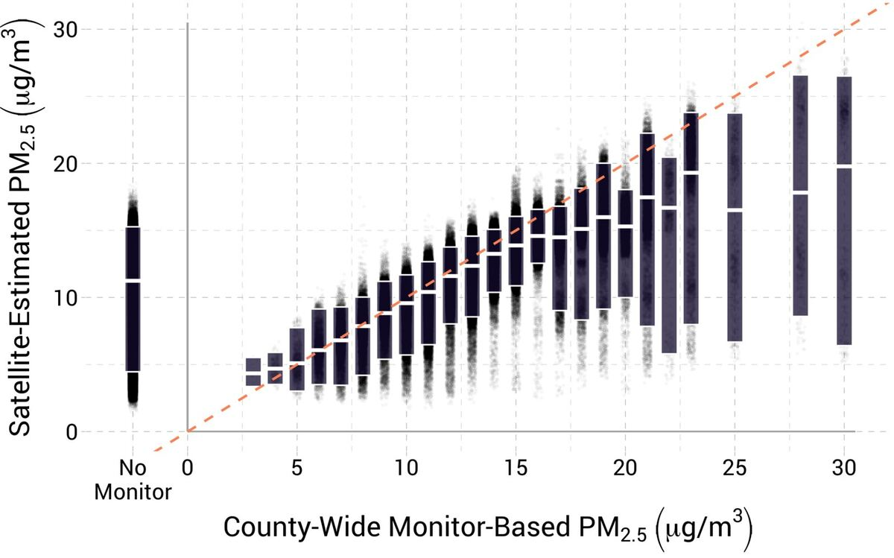
Satellite-estimated vs. monitor-based daily PM2.5. Source: Di et al.
What satellites let us see
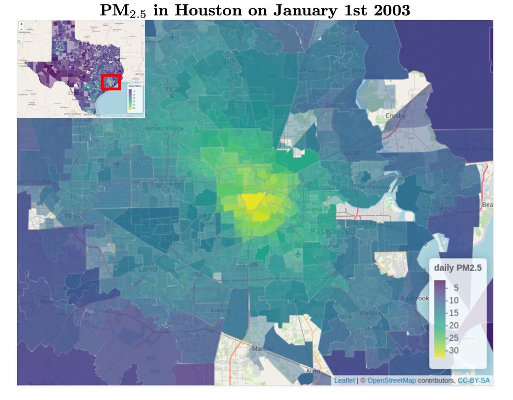
Satellite-based daily PM2.5 for Houston, January 1, 2003
Pollution maps without monitors
- Neighborhood-level pollution, every day, everywhere — no monitor required
- This is what “big data” adds to a question people have studied for decades
One more reason not to trust monitors alone
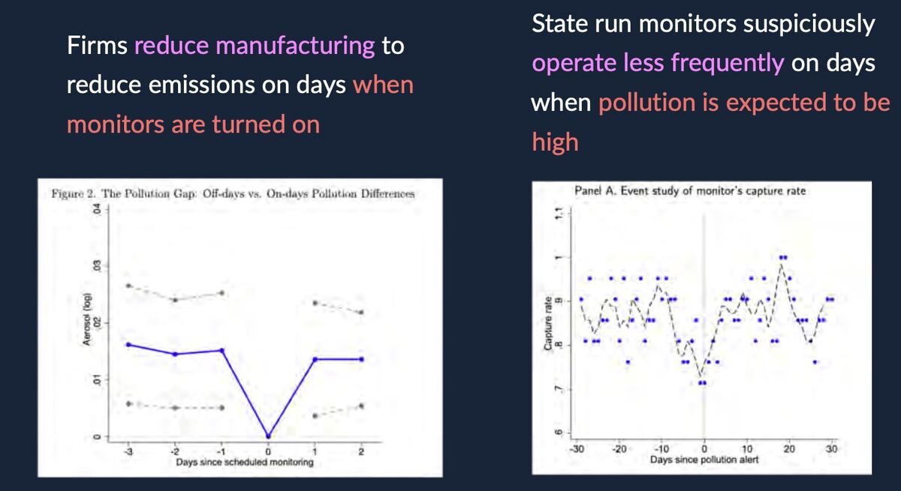
Source: left, Zou (2021); right, Mu, Rubin, and Zou
The measured respond to measurement
- Firms cut emissions on the days monitors are scheduled to run
- Some state-run monitors “happen” to shut off when pollution is expected to be high
- People respond to incentives — including the people being measured
Why causal inference is hard here
Pollution is not randomly assigned
- Who lives near the highway, the port, the factory?
- Lower-income households — who also differ in health care access, housing quality, jobs, smoking, stress
- Compare polluted vs. clean places and you confound pollution with everything else about those places
- Sound familiar? Same problem as neighborhoods and upward mobility
The ideal experiment
- Flip a coin for each city each day: heads, extra PM2.5; tails, clean air
- Obviously we can’t (and shouldn’t) run it
- But nature runs something close: the wind changes direction
- Same city, same people, same hospitals — different air, day to day
Reading: Deryugina et al. (2019)
- “The Mortality and Medical Costs of Air Pollution: Evidence from Changes in Wind Direction” (American Economic Review)
- Data: Medicare records — nearly all Americans 65 and older, 1999–2013
- Instrument: daily changes in local wind direction
- Questions: how many deaths does an extra day of PM2.5 cause, and what does it cost the health system?
The wind as a natural experiment
In San Francisco, wind from the southeast brings dirty air; wind from the west brings clean Pacific air
Every county has its own “dirty” and “clean” wind directions
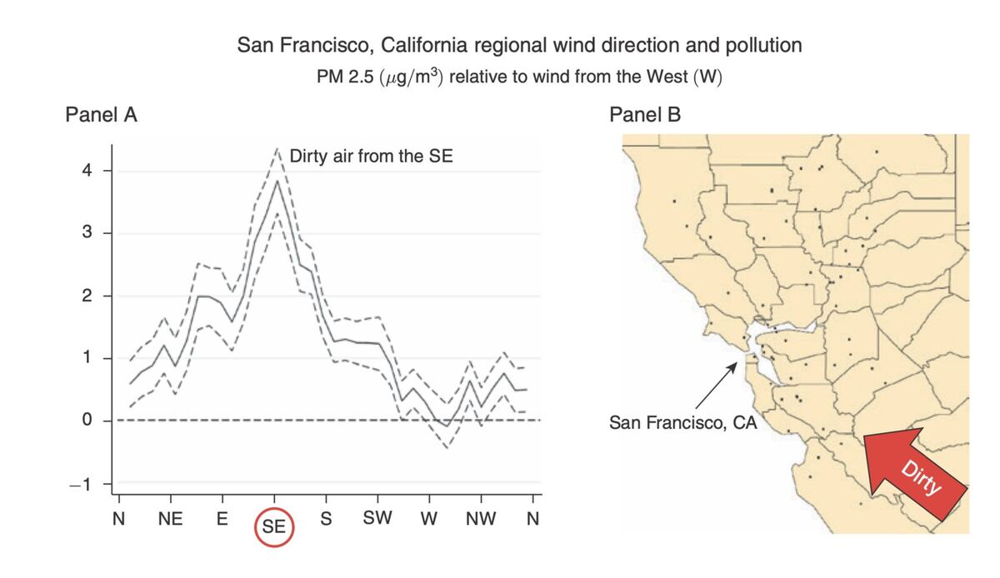
PM2.5 in San Francisco by wind direction, relative to wind from the west. Source: Deryugina et al. (2019)
Why is wind direction a good instrument?
- It strongly moves PM2.5 — a powerful “first stage”
- But the wind doesn’t care about your income, habits, or hospital
- The comparison is within the same county across days, controlling for weather (temperature, humidity, wind speed)
- Related trick you’ll see in other papers: thermal inversions, when a warm air layer traps pollution near the ground
What they find
- One extra day with 1 μg/m³ more PM2.5 (roughly 10% of a typical day) causes 0.69 additional deaths per million elderly people over the next three days
- Plus more emergency room visits and higher inpatient spending
- Small per person — enormous across 46+ million Medicare beneficiaries, every polluted day, every year
Two lessons hiding in the estimates
- The wind-based estimates are larger than naive correlations — simple comparisons understate how deadly pollution is
- Machine learning on Medicare histories shows the deaths are concentrated in the most vulnerable ~25% of the elderly — but victims still lose meaningful life expectancy, not just days
- Method + big data: 16 billion person-day observations behind these numbers
TopHat: Check the logic
Deryugina et al. compare the same county on days when wind blows from its dirty direction vs. its clean direction. What problem does this solve?
- A: PM2.5 is hard to measure without satellites
- B: Polluted places differ from clean places in many other ways
- C: Elderly people move to cleaner counties
- D: Wind speed affects mortality directly
The long run: the Clean Air Act
Acute deaths aren’t the whole story
- The wind design captures short-run effects: deaths within days
- But pollution exposure in early childhood could shape health and skills for a lifetime
- Isen, Rossin-Slater, and Walker ask: does the air you breathed as a newborn affect your paycheck at age 30?
- For that we need a quasi-experiment that changed pollution for entire birth cohorts
The Clean Air Act of 1970
- Landmark federal law: a ceiling on total suspended particulates that every U.S. county had to meet
- Attainment counties: already below the ceiling → nothing to do
- Non-attainment counties: above the ceiling → forced to cut pollution, fast
- Result: pollution fell sharply in non-attainment counties and barely changed in attainment counties — a treatment group and a control group
Pollution before and after the law
- Before 1970: the two groups trend in parallel — dips and bumps match
- After 1970: non-attainment counties dive below the ceiling by 1975
- Comparing the two groups, before vs. after, isolates the effect of the law — a design called difference-in-differences (we’ll build it properly next class)
Earnings 30 years later
- Link Census and tax records: where you were born → your earnings at ~age 30
- Cohorts born before 1970: no difference between county groups — flat line (parallel trends!)
- Cohorts born just after: kids from cleanup counties work more and earn more 30 years later
How big is the long-run payoff?
- Cleaner air at birth raised affected children’s earnings by about 1%
- Adds up to roughly $6.5 billion in extra earnings per birth cohort
- And that ignores health benefits, avoided deaths, and everyone who wasn’t a newborn
- A 1970 regulation is still paying dividends in today’s labor market
Pollution and the brain
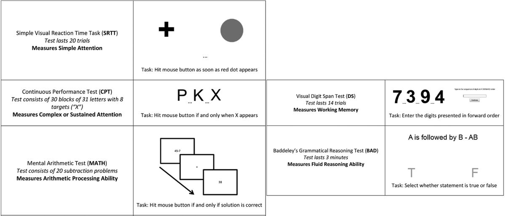
The cognitive test battery in Bedi et al. (2021)
Dirty air, lower scores
- Ebenstein et al. (2016): 1 s.d. more PM2.5 on exam day → scores fall 1.7% of a s.d. on high-stakes tests
- Bedi et al. (2021): about 3% lower scores per 10 μg/m³; Roth (2021) finds similar for PM10 — effects stronger for boys
- Pollution doesn’t just attack lungs — it reaches attention, memory, and decision-making
TopHat: Which claim needs the long-run evidence?
Which statement could NOT be supported by the wind-direction study alone?
- A: Dirty-air days increase elderly deaths within three days
- B: Pollution raises emergency room spending
- C: Reducing pollution around newborns raises their adult earnings
- D: Naive correlations understate pollution’s mortality effects
Costs, benefits, and the “right” amount
Regulation is costly — and people noticed
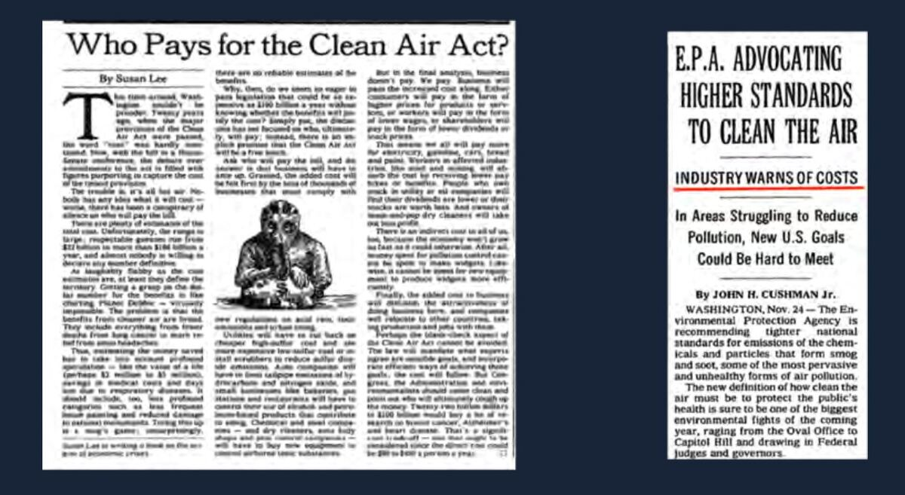
Newspaper coverage of Clean Air Act costs
Someone always pays
- Compliance costs are real: higher prices, lower wages, lower dividends — someone pays
- The policy question is never “costs, yes or no?” — it is whether benefits exceed costs
We spend serious money on this
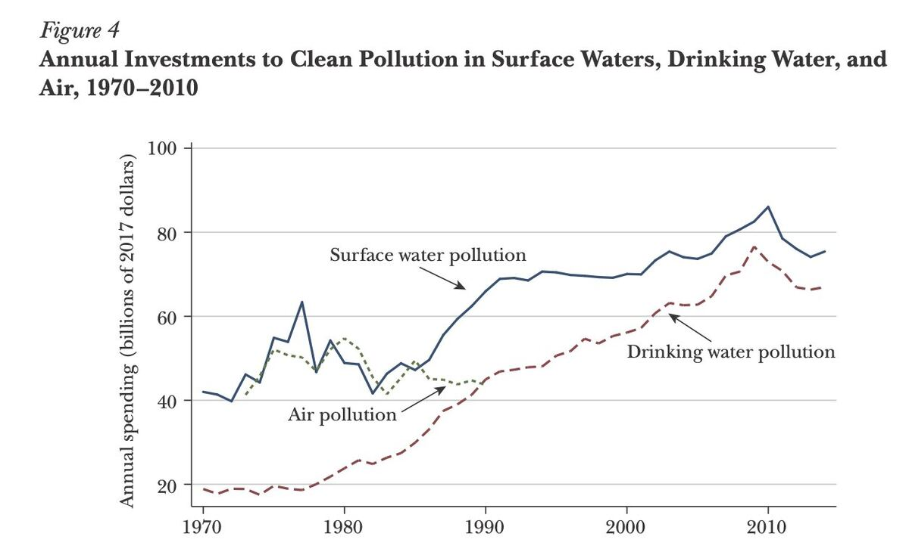
Annual U.S. spending to reduce pollution, 1970–2010. Source: Keiser and Shapiro (2019)
Where the abatement money goes
- Tens of billions per year each for air, drinking water, and surface water
- Water, not air, is where the biggest money goes — since the 1972 Clean Water Act, over $1 trillion total, about $100 per person-year (Keiser and Shapiro 2019)
So is it worth it?
- Benefits are huge but invisible: deaths that didn’t happen, IQ points not lost, wages not forgone
- That’s why the measurement half of today matters — the benefit side of the ledger is exactly the social cost we learned to estimate
- EPA’s own retrospective analyses find Clean Air Act benefits exceeding costs many times over — driven mostly by mortality
- But “benefits exceed costs” must be shown, not assumed — and for some rules it fails
The optimal amount of pollution is not zero
- Sounds scandalous; it’s just marginal thinking
- The first tons of cleanup are cheap and save many lives — do them
- The last ton (banning all cars, closing all farms) costs vastly more than the harm it prevents
- Stop where marginal benefit = marginal cost of cleanup
- Zero pollution would make us poorer and sicker — the goal is the right amount, found with evidence
Recap
- Externalities: prices omit damage to others → markets overproduce pollution (gasoline: 150B gallons vs. 100B at the social optimum)
- Measuring pollution: monitors are sparse and gameable; satellites see everything
- Wind-direction natural experiment: 1 μg/m³ more PM2.5 for one day → 0.69 extra deaths per million elderly (Deryugina et al. 2019)
- Clean Air Act 1970: cleaner air at birth → ~1% higher earnings at 30, ~$6.5B per cohort
- Regulation passes when benefits exceed costs; optimal pollution ≠ 0
Environment II: leaded gasoline, NASCAR, and event studies
Today’s question
What happened to children’s blood lead — and elderly mortality — when stock-car racing finally took the lead out of its fuel?
- Last class: pollution is an externality, and we can price its health costs
- Today: one deregulation event turns NASCAR into a natural experiment
- Full disclosure: today’s paper is your professor’s own (Hollingsworth and Rudik 2021)
Where we’re headed
- A short history of leaded gasoline — and the racing loophole
- Why a single race is a big deal for lead emissions
- Difference-in-differences: the workhorse design of Project 3
- Event studies: DiD with a timeline
- What deleading did to blood lead near tracks and to elderly mortality
Lead and the racing loophole
Lead is a potent neurotoxin
- Damages the brain and nervous system — children are most vulnerable
- In adults, raises cardiovascular and mortality risk
- Public-health consensus: there is no safe level of lead exposure
- Yet for most of the 20th century, we burned it in every gallon of gasoline
The rise and fall of leaded gasoline
- 1920s: tetraethyl lead added to gasoline to stop engine knock
- 1975: new cars need catalytic converters — unleaded pumps appear and the phase-down begins
- 1996: leaded gasoline banned for on-road vehicles in the U.S.
- Children’s blood lead levels fell dramatically as lead left the pumps
The loophole: racing was exempt
- The on-road ban never applied to racing fuel — a regulatory exemption
- NASCAR and ARCA kept burning leaded fuel for another decade
- In 2007 the series switched to unleaded
- A sharp, dated change in lead emissions — concentrated near specific racetracks
Racing fuel, leaded vs. unleaded
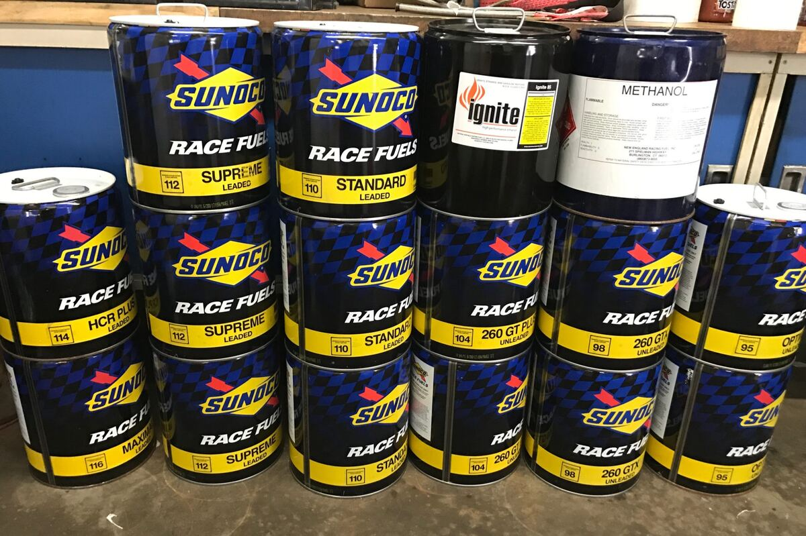
Leaded
5.2 g/gal
112 octane
Unleaded
no added Pb
96 octane
Source: Hollingsworth and Rudik (2021)
Same races, different fuel
- Leaded race fuel: 5.2 grams of lead per gallon, 112 octane
- Unleaded replacement: no added lead, about 96 octane
- Same races, same tracks, same crowds — only the fuel changed
How much lead is one race?
- About 40 cars racing up to 500 miles
- Fuel economy: 2–5 miles per gallon
- At 5.2 grams of lead per gallon, that is 45–110 pounds of lead in a single race
- Roughly what an average U.S. airport emits in an entire year
TopHat: Where would you look for effects?
If leaded racing harmed health, who should show it first?
- A: Children living near racetracks
- B: Elderly residents living near racetracks
- C: Everyone in the state, about equally
- D: A and B — with effects fading as you move away from the track
A natural experiment
Racing generates quasi-experimental variation
- Race counties: home to a track that hosted leaded races
- Border counties: right next door to a race county
- Control counties: similar counties farther from any track
- Timing: everything changes at once in 2007, when the fuel goes unleaded
Why not simpler comparisons?
- Race vs. control counties in 2006? Race counties differ in many ways — more urban, more industry, more traffic
- Race counties before vs. after 2007? Blood lead was already falling everywhere for other reasons
- Each simple comparison is confounded
- The fix: combine them — difference-in-differences
Difference-in-differences
The DiD recipe
- Change for the treatment group: after − before
- Change for the control group: after − before
- Subtract: (treatment change) − (control change)
- The control group’s change nets out everything that was happening anyway
- What remains is the causal effect — if one key assumption holds
Raw data: children’s blood lead
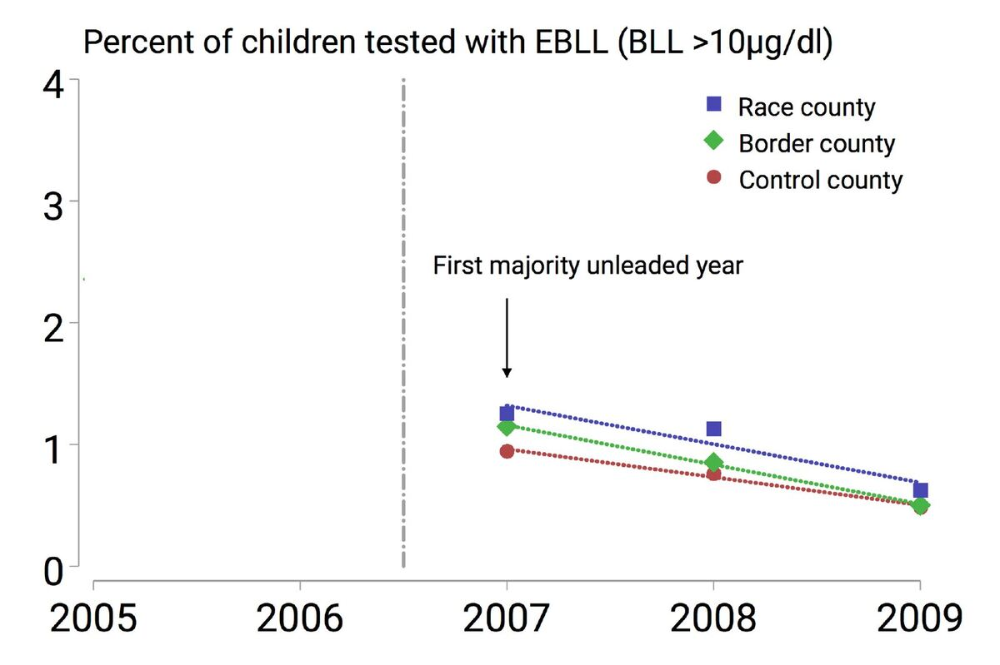
Source: Hollingsworth and Rudik (2021)
Raw data: children’s blood lead

Source: Hollingsworth and Rudik (2021)
Reading the raw data
- Look only at 2007 onward and there is no story: all three groups sit on top of each other
- Add the pre-period and the story appears — a clear ranking while races were leaded: race > border > control
- After the 2007 switch, the gaps collapse — the three groups become nearly indistinguishable
TopHat: compute the DiD
Rounded from the figure (percent of children with elevated blood lead):
| 2006 (leaded) | 2007 (unleaded) | |
|---|---|---|
| Race counties | 2.8 | 1.3 |
| Control counties | 1.3 | 1.0 |
What is the difference-in-differences estimate, in percentage points?
- A: −1.5 · B: −1.2 · C: −0.3 · D: +1.2
Parallel trends: the key assumption
- Claim: without deleading, race counties’ blood lead would have trended like the control counties’
- Not directly testable — it is a claim about a world we never observe
- Best available evidence: did the groups trend together before 2007?
- In the raw data: yes — all three groups were declining in parallel
Event studies
DiD with a timeline
- Plain DiD gives a single number: the average before/after difference
- An event study estimates the treatment–control gap in every period, relative to the event year
- Two payoffs:
- The pre-period is a built-in check on parallel trends
- The post-period shows dynamics: does the effect appear, grow, fade?
Reading an event-study plot: the post-period
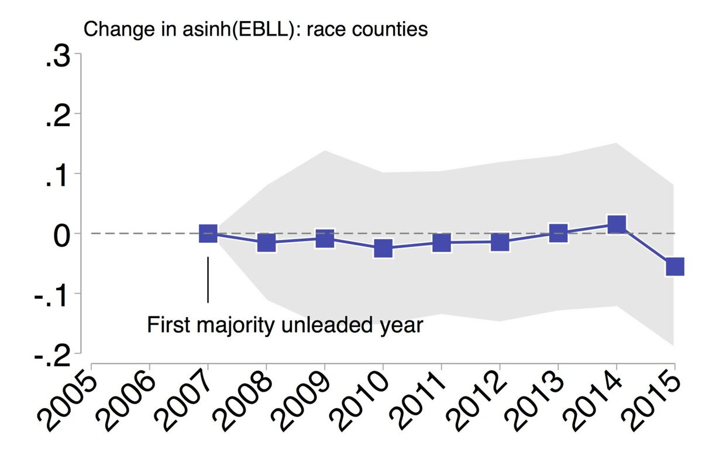
Source: Hollingsworth and Rudik (2021)
What the post-period shows
- Each point: the race-county gap in that year, relative to the switch year (2007)
- After deleading, race counties look just like everywhere else
- But this is only half the picture…
The pre-period tells the story

Source: Hollingsworth and Rudik (2021)
A 16 percent elevation, gone at the switch
- Before 2007, elevated blood lead in race counties ran about 16 percent higher on average
- The elevation vanishes exactly at the fuel switch — and stays gone
- Sharp timing is hard to explain with anything except the fuel
The same plot, one county over
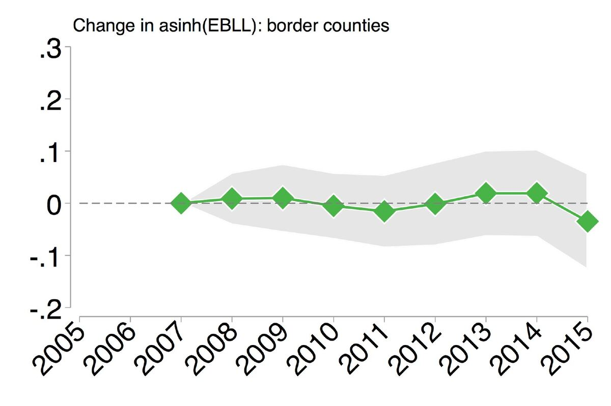
Source: Hollingsworth and Rudik (2021)
The same plot, one county over
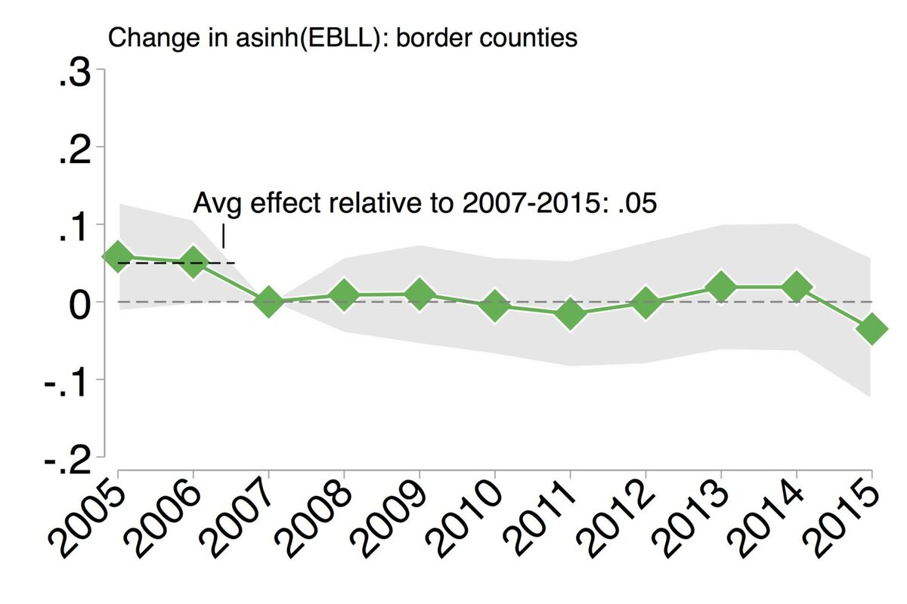
Source: Hollingsworth and Rudik (2021)
Border counties: effects fade with distance
- Counties next door: about 5 percent elevated before 2007 — smaller than race counties, larger than distant controls
- A dose–response gradient: closer to the track, more lead
- Exactly the pattern a real pollution effect should produce
TopHat: which pattern should worry us?
You run an event study and see…
- A: Pre-period flat at zero; effect appears at the event and persists
- B: Estimates already trending downward before the event
- C: Pre-period noisy but centered on zero
- D: Effect appears at the event, then slowly fades
From blood lead to mortality
Measuring elderly mortality
- Restricted CDC Vital Statistics: every U.S. death, 1999–2015
- Level: county × month · Outcome: deaths per 100,000 residents age 65+
- Baseline: about 4,600 all-cause deaths per 100k per year among the 65+ population
- Same county-level DiD and event-study design as for blood lead
Deleading reduced elderly mortality
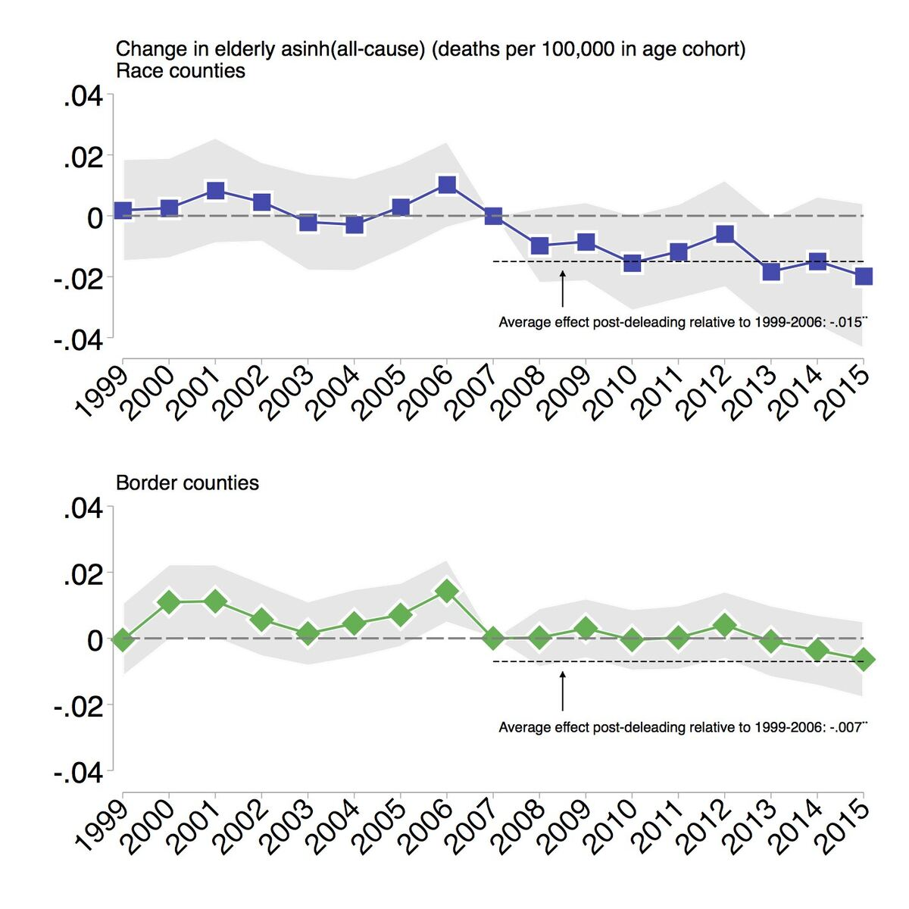
Source: Hollingsworth and Rudik (2021)
Reading the mortality event study
- Race counties: elderly mortality fell about 1.5 percent after deleading; border counties: about 0.7 percent
- No pre-trend through 2006 — then a clear, persistent decline
How big is 1.5 percent?
- 1.5% of a 4,600-per-100k baseline ≈ 70 fewer deaths per 100,000 elderly residents per year in race counties
- A small percentage of a common outcome is a lot of lives
- Echoes last class: pollution’s harms concentrate on the most vulnerable — the very young and the very old
Event time vs. calendar time
NASCAR was the easy case
- Every track switched fuels at the same moment: 2007
- So the calendar year is time-since-treatment
- Most policies are messier: different places adopt in different years — “staggered adoption”
- A case you know: the Duke Endowment hospital program (Hollingsworth et al. 2024) — the data behind Project 3
Calendar time hides the effect
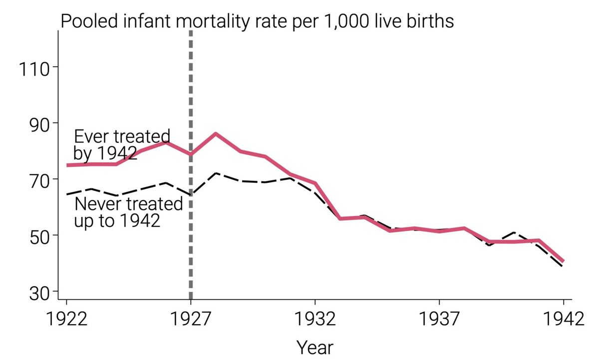
Source: Hollingsworth et al. (2024)
Why calendar time fails here
- Counties got their first Duke hospital funding in different years, starting in 1927
- In calendar time, treated and untreated mortality both plunge — the treatment effect is buried in the era’s overall decline
Line up on event time instead
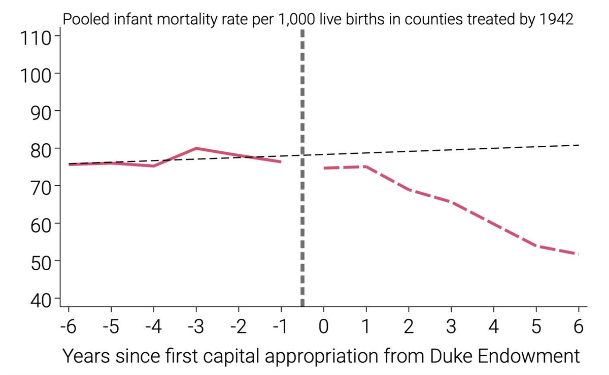
Source: Hollingsworth et al. (2024)
Event time makes it readable
- Re-index each county to years since its own treatment date
- Flat before zero; steady decline only after the money arrives
- Event time makes staggered adoption readable — this is the plot you will build in Project 3
The same idea, with confidence intervals
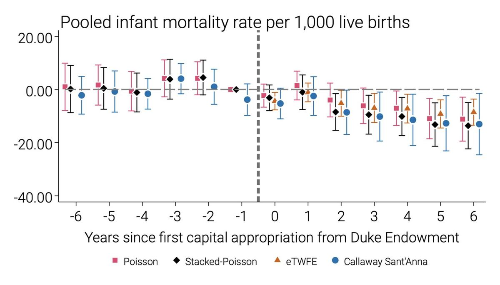
Source: Hollingsworth et al. (2024)
Four estimators, one answer
- Pre-period: statistically zero — the parallel-trends check passes
- Post-period: infant mortality falls by roughly 10 per 1,000 births by year six
- Four different estimators, one answer — that agreement is a robustness check
Project 3: your turn
- Project 3 — The Gift of a Lifetime (difference-in-differences) — due Tuesday, November 17, 2026
- You will estimate difference-in-differences and event-study models on the Duke Endowment data
- Everything from today — treatment vs. control, parallel trends, pre-trends, event time — is your toolkit
Recap
- Racing’s leaded-fuel exemption ended in 2007 — a natural experiment unfolding near racetracks
- DiD = (treatment change) − (control change); credible only under parallel trends
- Event studies check pre-trends and trace dynamics period by period
- Deleading: children’s elevated blood lead fell ~16% in race counties; elderly mortality fell ~1.5% — with smaller effects next door
- Staggered policies: analyze in event time, not calendar time
Environment III: climate change and cost-benefit analysis
Today’s question
What is one ton of carbon dioxide worth — and why does the answer depend on an interest rate?
- Last two classes: pollution that lands nearby and soon
- Climate change: damages land everywhere, over centuries
- That timing problem puts one number — the discount rate — at the center of climate policy
Where we’re headed
- The social cost of carbon: one number that prices an externality
- Damage functions: how economists measure what warming does
- Method spotlight: discounting — why Stern and Nordhaus looked at the same planet and reached opposite conclusions
- Two tools for pricing carbon: carbon taxes and cap-and-trade
The hardest externality
Climate change is the ultimate externality
- CO2 from a tailpipe in Columbus mixes into the global atmosphere within weeks
- It stays there for centuries — a stock pollutant, not a flow
- The driver pays for the gasoline, not for the warming
- Same market failure as the pollution externalities class — pushed to its logical extreme
TopHat: Where do the damages land?
One ton of CO2 emitted in Columbus today causes damages…
- A: Mostly around Columbus, mostly this year
- B: Mostly in the U.S., over the next decade
- C: Spread across the entire world, over the next several centuries
Why this externality is so hard to fix
- Global: almost all the benefit of your abatement goes to other countries — every country wants to free-ride
- Delayed: today’s emitters are largely gone before the worst damages arrive
- Invisible: CO2 is odorless; warming is gradual (more on salience next class)
- No single government owns the problem — and no market prices it
Cost-benefit analysis for climate policy
- Any climate policy trades off:
- Costs now: abatement, higher energy prices, forgone output
- Benefits later: damages avoided in 2050, 2100, 2200…
- To compare them we need both sides in the same units: dollars today
- Two ingredients: a damage function and a discount rate
The social cost of carbon (SCC)
- Definition: the dollar value of all present and future damages caused by emitting one more ton of CO2
- It is the price tag on the externality — the Pigouvian tax from the pollution externalities class, applied to carbon
- The U.S. government uses it to evaluate fuel-economy rules, power plant regulation, appliance standards, and more
Three steps to the SCC (Chetty)
- Climate step: predict how emissions change the climate (climate science — not our department)
- Damages step: measure how climate changes affect what people care about — output, health, mortality
- Discounting step: add up damages across centuries and convert them to dollars today
- Steps 2 and 3 are economics — and today’s class
Damage functions
What is a damage function?
- A damage function maps warming into losses in things people value: GDP, crops, coastlines, health, lives
- Slope and shape are empirical questions — this is where big data earns its keep
- Today’s running example: what do extreme temperatures do to the health of older Americans?
Measuring damages: temperature and the elderly
- CBO study of the entire Medicare population (Jageler et al. 2024)
- Daily ER visits, spending, and deaths by ZIP code, 2000–2019
- Compare outcomes in the same place on a very hot day vs. a mild (60–65°F) day, using 5°F temperature bins
- Same fixed-effects logic you saw in the last two classes
What an extreme day does
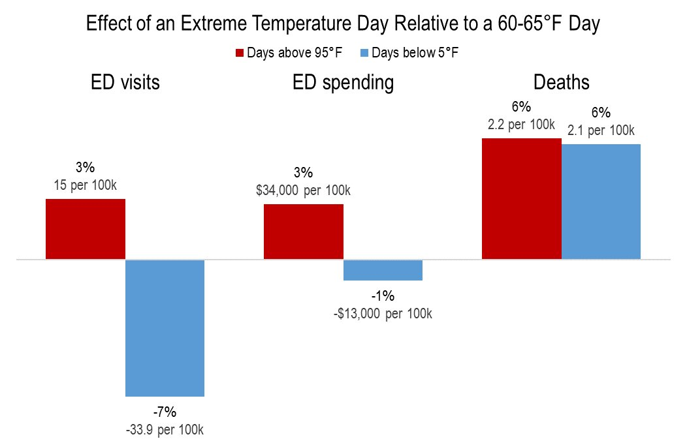
- Very hot days: +6% deaths — and more ER use
- Very cold days: +6% deaths — with fewer ER visits
Source: Jageler et al. (2024), CBO — extreme temperature day vs. a 60–65°F day, Medicare population.
The dose-response curve
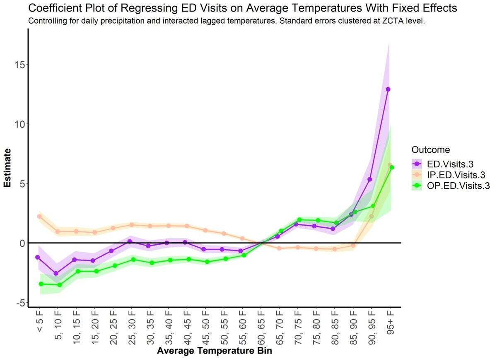
- Flat through mild weather, then a hockey stick above 90°F
- This is a damage function — estimated from millions of person-days
Source: Jageler et al. (2024), CBO — three-day ER visits per 100,000 Medicare enrollees, by daily temperature bin.
TopHat: Dallas or Minneapolis?
A 95°F day hits. Where does it cause the bigger jump in ER visits among seniors: Dallas or Minneapolis?
- A: Dallas — it’s already dangerously hot there
- B: Minneapolis — heat is rare there, so people aren’t ready
- C: Same everywhere — 95°F is 95°F
Adaptation: the same day, different damage
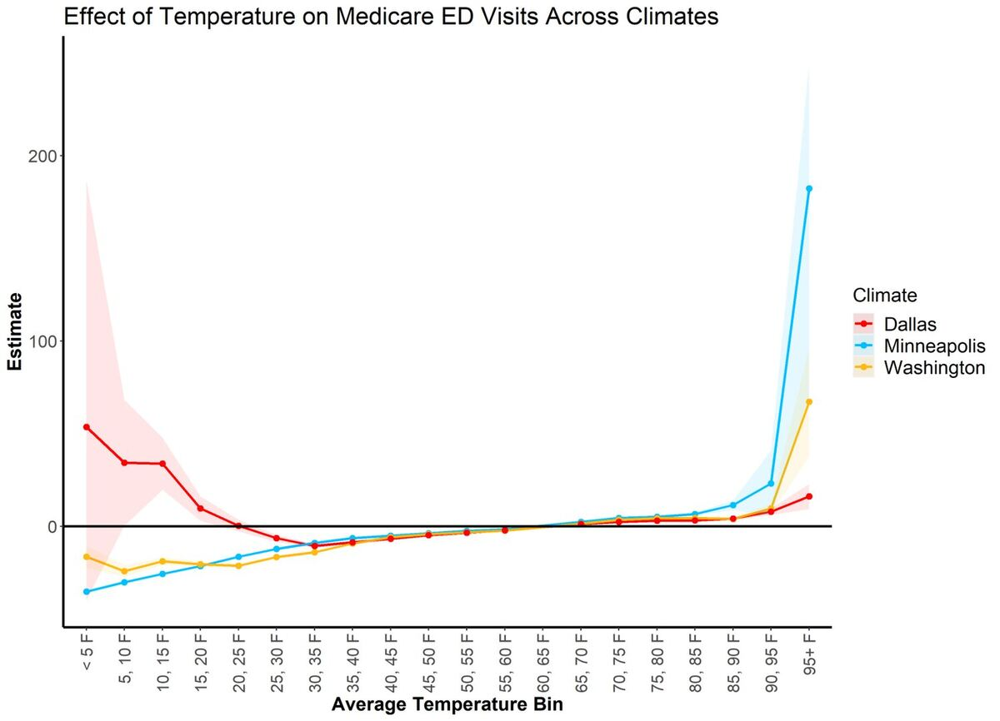
- Hot days hammer Minneapolis; cold days hammer Dallas
- Each city is adapted to its own climate — AC, buildings, habits
Source: Jageler et al. (2024), CBO — effect of temperature on Medicare ER visits in three cities.
Damage functions move over time
- Adaptation means the damage function is not fixed
- CBO lets each place’s response evolve: by 2075, Minneapolis is modeled to respond to heat like Washington, DC does today
- Ignoring adaptation overstates damages; assuming free adaptation understates them — adaptation itself is costly
Damages depend on the emissions path
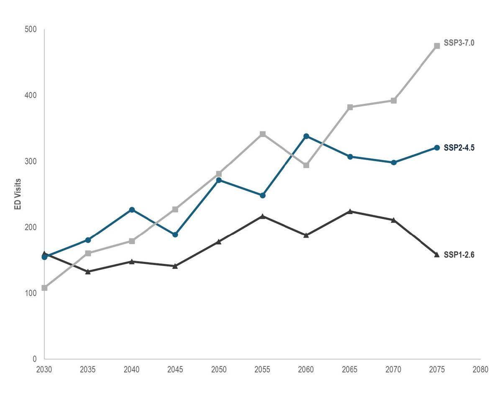
- Damages in 2075 range widely depending on which emissions scenario the world follows
Source: Jageler et al. (2024), CBO — projected annual ER visits per 100,000 Medicare enrollees, three emissions scenarios.
A surprise in the U.S. numbers
- Under the middle scenario, CBO projects cumulative Medicare deaths through 2075 fall by roughly 320,000
- Why? Fewer deadly cold days save more elderly American lives than extra hot days take
- Warmer places without air conditioning face the opposite: a hot day that barely registers in U.S. mortality is deadly in India (Burgess et al. 2017)
Hot days in India vs. the United States
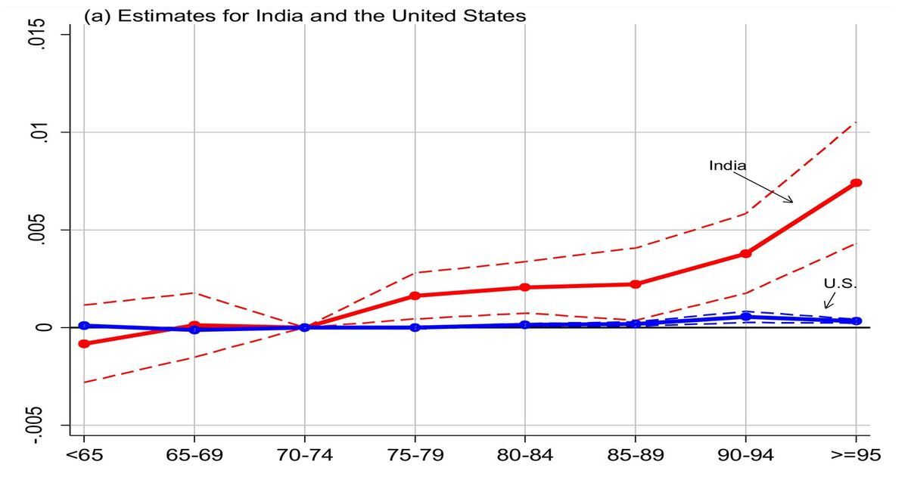
Source: Burgess et al. (2017) — effect of hot days on mortality in India and the U.S.
The same hot day, wildly different damage
- Income and air conditioning are life-saving technologies
- This is why the SCC must be global: most mortality damages land in hot, poor places
From damages to one dollar figure
- Repeat this exercise for every sector: health, agriculture, labor productivity, energy, sea-level rise, storms
- Add across sectors and across countries → damages per year, for every future year
- One step left, and it’s the big one: damages arrive in 2050, 2100, 2200 — what are they worth today?
Method spotlight: discounting
Why a dollar in 2126 isn’t a dollar today
- A dollar today can be invested and grow — $1 at 5% becomes $1.05 next year
- So a benefit arriving next year is worth slightly less than the same benefit today
- Present value: divide future amounts by (1 + r) once for every year of delay
- The rate r is the discount rate
Compounding is merciless over a century
What is $1,000,000 of climate damage in the year 2126 worth today?
| Discount rate | Present value of $1M in 100 years |
|---|---|
| 1% | ≈ $370,000 |
| 3% | ≈ $52,000 |
| 7% | ≈ $1,200 |
- Small, boring-looking differences in r become 300-fold differences over 100 years
TopHat: Present value
At a 7% discount rate, $1,000,000 of damage in the year 2126 is worth how much today?
- A: About $500,000
- B: About $52,000
- C: About $1,200
- D: Essentially zero
Two extreme views of the future (Chetty)
- Care only about the present (r very high): most climate damage arrives after 2100 → climate change is nearly costless
- Weight every generation equally (r ≈ 0): damages like 20% of GDP, every year, forever → the cost is infinite
- Every real SCC lives between these extremes
- The discount rate is the dial — so where should we set it?
Can markets tell us? The leasehold trick
- We need discount rates over centuries — no ordinary asset runs that long
- Giglio, Maggiori, and Stroebel (2015): housing in the UK and Singapore sells two ways
- Freehold: you own the home forever
- Leasehold: you own it for 100–1,000 years, then it reverts
- Compare prices of near-identical homes → how buyers value cash flows a century out
What the housing market reveals
- Buyers pay about 12% less for 100 years of ownership than for forever
- Flip side: ownership beyond year 100 is still worth real money — people do value the very far future
- Implied annual discount rate: about 2.6%
- ($1,000 next year ≈ $974 today at that rate)
Stern vs. Nordhaus: same planet, opposite advice
| Stern Review (2006) | Nordhaus (DICE) | |
|---|---|---|
| Discount rate | ≈ 1.4% | ≈ 4.5% |
| Rationale | Ethics: future people count equally | Match rates markets actually pay |
| Implied SCC | High ($85+/ton) | Modest (≈ $35/ton) |
| Policy | Act aggressively now | Carbon price that ramps up |
- Nordhaus won the 2018 Nobel Prize for this modeling — the debate is still open
The discount rate drives U.S. policy
| Discount rate | SCC per ton | Who used it |
|---|---|---|
| 7% | ≈ $5 | Trump administration |
| 3% | ≈ $40 | Obama working group |
| 2% | ≈ $190 | EPA update (2023) |
- Same climate science, same damage estimates — the interest rate does almost all the work
- At $5/ton almost no regulation passes cost-benefit; at $190/ton almost everything does
TopHat: Which rate would you use?
If you ran the EPA, which discount rate would you apply to climate damages?
- A: 7% — the return investors actually demand
- B: 3% — a middle course
- C: 2% or lower — close to the housing-market evidence
- D: ≈ 0% — future generations count equally
There is no purely technical answer
- Descriptive view: use rates revealed by real behavior (markets, housing ≈ 2.6%)
- Prescriptive view: discounting people is an ethical choice — why should a child born in 2100 count less than you?
- Data can pin down the damages; the discount rate is ultimately a values question
- Best practice: report the SCC under several rates — and say so
Pricing carbon
Two ways to put a price on carbon
- Both tools make emitters face the SCC; they differ in what they fix
- Carbon tax: government sets the price; the market chooses the quantity
- Cap-and-trade: government sets the quantity; the market discovers the price
- In a frictionless textbook world, the two are equivalent
Carbon tax
- Charge $X per ton of CO2 embedded in fuels — the Pigouvian prescription: set X = SCC
- Firms and households cut the emissions that are cheapest for them to cut
- Price is certain; total emissions are not
- Raises revenue that can be rebated or fund other priorities
Cap-and-trade
- Government caps total emissions and issues that many permits
- Firms trade: low-cost abaters sell permits, high-cost abaters buy
- Trading concentrates cuts where they are cheapest — the cap is met at least cost
- Quantity is certain; the permit price is not
Tax vs. cap: the honest comparison
| Carbon tax | Cap-and-trade | |
|---|---|---|
| Fixed | Price | Total quantity |
| Uncertain | Emissions | Permit price |
| Revenue | Yes | Only if permits auctioned |
| Politics | “Tax” is a hard word | Caps hide the price |
- Either beats command-and-control rules on cost — the fight is mostly over price vs. quantity certainty
Carbon pricing in the real world
- EU Emissions Trading System (2005): the world’s largest carbon market
- California cap-and-trade; RGGI among northeastern U.S. power plants
- British Columbia carbon tax (2008); Sweden’s tax is above $100/ton
- Roughly a quarter of global emissions now face some carbon price — most well below $190/ton
- The U.S. has no national carbon price; the SCC works through regulation instead
The scale of the challenge
- Scientists estimate emissions must fall roughly 50% to stop the rise in global temperatures (Chetty)
- Existing carbon prices are too low, and cover too little, to get there on their own
- So the practical questions become: do these policies actually change behavior? By how much? Who pays?
- That is next class
Recap
- SCC = present value of all damages from one more ton of CO2 — built in three steps: climate, damages, discounting
- Damage functions are estimable: heat kills, cold kills, adaptation and income reshape the curve (Minneapolis vs. Dallas; India vs. U.S.)
- Discounting drives everything: 7% → $5/ton, 3% → $40, 2% → $190 — an ethics question wearing a finance costume
- Tax vs. cap-and-trade: fix the price or fix the quantity; both beat doing it by decree
Environment IV: environmental policy in practice
Today’s question
We know pollution is costly. What should we actually do about it — and does evidence from one place tell us what will happen in another?
- Regulation has benefits — and real costs someone must pay
- Three policy instruments: standards, taxes, permits
- Method spotlight: external validity
- Who lives near pollution? Environmental justice
- Last day of the environment unit — we wrap up the arc
Project 3 is due this week
- Project 3 — The Gift of a Lifetime (difference-in-differences) — due Tuesday, November 17, 2026
- Uses the difference-in-differences tools from Classes on hospitals and leaded gasoline
- In-class quiz on Project 3 is next class, in class
- Office hours: Tuesdays 2:00–3:00 p.m., sign up via Calendly (in person at Bricker 260 or via Zoom, select when you sign up)
Regulation is costly
The unit so far
- Environment I: pollution is an externality; wind-direction quasi-experiments show it kills (Deryugina et al. 2019)
- Environment II: leaded gasoline and the NASCAR event study (Hollingsworth and Rudik 2021)
- Environment III: climate damages and discounting — the social cost of carbon
- Today: given the damages, what policy? And what does it cost?
Regulation must pass a cost–benefit test
- Benefits: deaths avoided, healthier kids, higher earnings — the estimates from the last three classes
- Costs: scrubbers, cleaner fuels, monitoring, paperwork — compliance costs
- Cleanup gets more expensive as the air gets cleaner
- So the economically optimal level of pollution is not zero
TopHat: What is the optimal level of air pollution?
- A. Zero — any pollution harms someone
- B. The level where removing one more unit costs more than the harm it prevents
- C. Whatever level current technology can achieve
- D. Whatever level the EPA writes into the standard
Who pays for the Clean Air Act?
Source: newspaper coverage of Clean Air Act compliance costs, early 1990s
“Business doesn’t pay. We pay.”
- Compliance costs reach households as higher prices, lower wages, or lower dividends
- Who bears a policy’s cost is called its incidence — it rarely stays where the law puts it
Compliance spending is enormous
Source: Keiser and Shapiro (2019)
Reading the spending figure
- Tens of billions of dollars per year, every year, for decades
- Surprise: we spend more on water than on air
Water: $1 trillion and counting
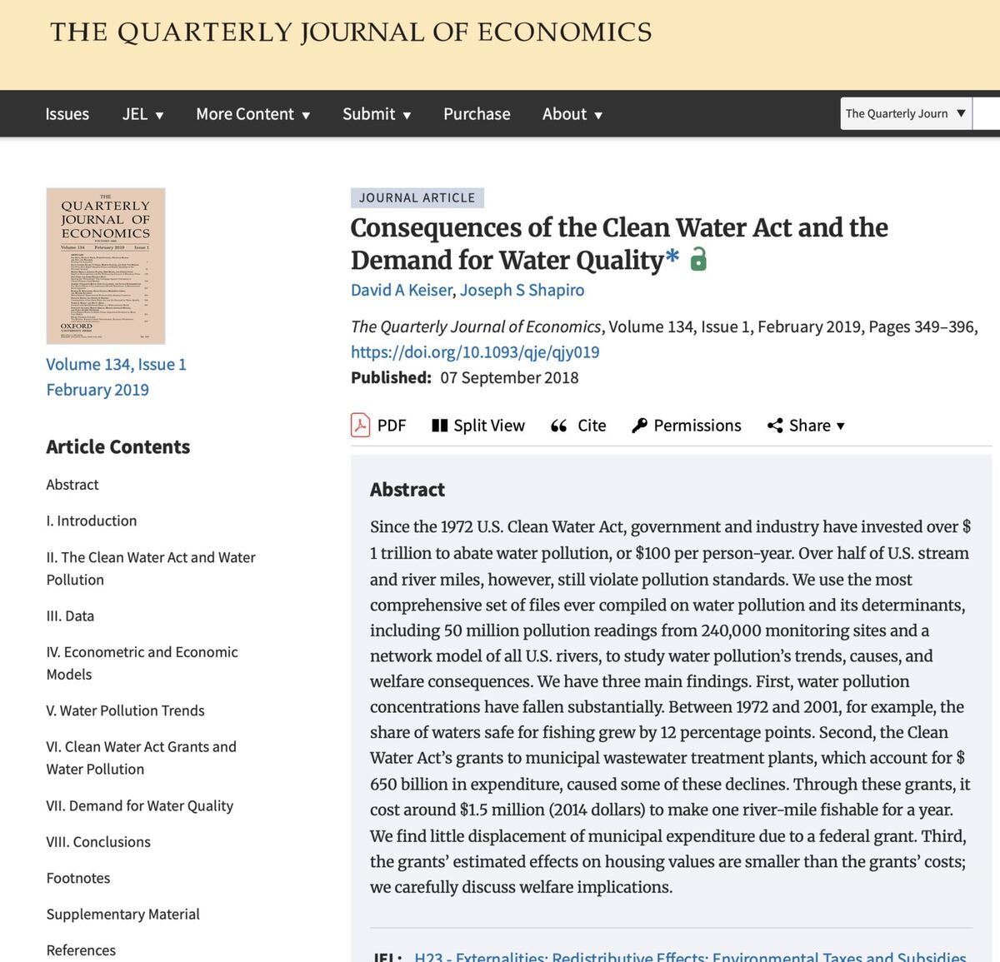
Over $1 trillion spent — and half of river miles still violate standards
Source: Keiser and Shapiro (2019, QJE), tallying the Clean Water Act’s costs and benefits
The Clean Water Act’s report card
- Since 1972: over $1 trillion spent — about $100 per person per year (Keiser and Shapiro 2019)
- Pollution fell: share of waters safe for fishing rose 12 percentage points, 1972–2001
- But over half of U.S. stream and river miles still violate standards
- Making one river-mile fishable for a year cost about $1.5 million — and measured housing-value benefits fall short of costs
Does that mean water rules failed?
- Careful — “measured benefits < costs” is not the same as “wasteful”
- Housing prices may miss health benefits, ecosystem value, and benefits to people far from the river
- Contrast: air-quality rules look strongly benefit-positive because we can count deaths avoided
- Lesson: cost–benefit verdicts are only as good as the measured benefits
Regulation in practice: gaming the monitors
Source: Zou (2021); Mu, Rubin, and Zou (2021)
What the monitoring figure shows
- Firms cut production on the 1-in-6 days monitors run; some state monitors go quiet when pollution is forecast to be high
- A rule on paper is not the same as a rule enforced
Three policy instruments
The policy toolkit
| Instrument | How it works | Example |
|---|---|---|
| Standard | Government sets a limit or required technology | Clean Air Act ceilings |
| Corrective tax | Price the harm; polluters pay per unit | Gas or carbon taxes |
| Tradable permits | Cap total quantity; firms trade the rights | Acid-rain SO2 market |
- All three try to fix the same market failure: the externality
Instrument 1: standards
- “Command and control”: every county under the total-suspended- particulates ceiling, or else
- This is the Clean Air Act design whose benefits we estimated with difference-in-differences (Chay and Greenstone 2005; Isen et al.)
- Strength: certainty about quantity of pollution
- Weakness: no flexibility — the firm that could cut cheaply and the firm that can’t face the same rule, so total cleanup costs more than necessary
Instrument 2: corrective taxes
- Pigouvian tax: set the tax equal to the marginal external damage — make the polluter face the social cost
- Recall the social cost of carbon: roughly $40/ton of CO2 (Obama-era working group; ~$5/ton at a 7% discount rate)
- A gallon of gasoline emits about 20 lbs of CO2, so $40/ton implies a tax of roughly $0.35 per gallon
- But does a gas tax actually change behavior? Two empirical steps
Step 1: who actually pays a gas tax?
- If producers just eat the tax, pump prices — and behavior — never change
- Quasi-experiment: in 2000, Indiana and Illinois suspended their gas taxes for several months; neighbors like Ohio did not
- Difference-in-differences: treated states vs. Midwest controls, before vs. after (Doyle and Samphantharak 2008)
- Finding: a 10-cent tax raises pump prices by about 7 cents — incidence is ~70% on consumers, 30% on producers
Step 2: do higher prices cut consumption?
- Li, Linn, and Muehlegger (2014): gas-tax changes in all 50 states, 1966–2008 — hundreds of natural experiments stacked with fixed-effects regression
- Identification: a state’s consumption would have tracked the nation absent its tax change (parallel trends, again)
- A 10% price increase reduces gas consumption by about 4% (elasticity ≈ 0.4)
- A $1/gallon tax → roughly 17% less gasoline — and that’s the short-run response; long-run responses (different cars, transit, moving) are likely larger
From gas taxes to carbon
- Transportation is about one-third of U.S. carbon emissions
- So a $1/gallon gas tax cuts U.S. emissions by roughly 5%
- Scientists estimate we need cuts of about 50% to stop warming
- Verdict: corrective taxes work — but no single tax on one sector gets us there
TopHat: If gas demand were perfectly inelastic…
Suppose drivers buy exactly the same gallons no matter the price. A new gas tax would be:
- A. Paid entirely by consumers — and pollution would not fall
- B. Paid entirely by producers — and pollution would fall a lot
- C. Split 50/50, with a moderate drop in pollution
- D. Impossible to pass through to prices
Instrument 3: cap and trade
- Government caps the total quantity of emissions, issues that many permits, and lets firms buy and sell them
- Firms with cheap cleanup options sell permits; firms with expensive cleanup buy them
- The cap is met at the lowest total cost — the market finds who should cut
- Classic case: the 1990 acid-rain program for SO2; today, the EU’s carbon market
Comparing the three instruments
| Standard | Tax | Cap and trade | |
|---|---|---|---|
| What’s fixed | Quantity (per source) | Price | Total quantity |
| Least-cost cleanup? | No | Yes | Yes |
| Raises revenue? | No | Yes | If permits are auctioned |
| Key risk | High cost | Uncertain quantity | Volatile permit price |
- Economists’ punchline: price-based tools usually deliver the same cleanup at lower cost than uniform standards
Beyond prices: salience and norms
Tiered electricity prices: a test of attention
- Electricity is priced in tiers: use more, and the price per kWh jumps
- If households optimize, we should see bunching — spikes in the usage distribution right at each tier cutoff
- Ito (2014), using household billing data from Orange County, CA: the distribution is completely smooth — no bunching at all
No bunching — two very different stories
- Story 1: prices aren’t salient — nobody knows which tier they’re in while the AC runs
- Story 2: demand is simply inelastic — people run the fridge and AC at any price
- These imply opposite policy advice: make prices clearer vs. give up on prices entirely
- How do we tell them apart? Find a price change everyone noticed
The border test: salient price hikes work
- Two utilities split Orange County: SCE in the north, SDG&E in the south
- Summer 2000: SDG&E raised prices across the board — it was all over the news; SCE changed nothing
- Spatial regression discontinuity at the service-territory border: consumption fell about 15% on the SDG&E side
- People do respond to prices — when they can see them. Salience is a policy tool
Nudges: the Opower letters
- Mail residents a report: your usage, your neighbors’ average, and your “efficient neighbors’” usage — plus a smiley-face grade
- Randomized experiments: usage falls about 2.5% (~1 kWh/day)
- Detail that matters: without the grade, below-average users increased usage — the injunctive norm prevents the boomerang (Cialdini; Chetty lecture notes)
- Cheap, scalable — but small next to what a real carbon price must do
Method spotlight: external validity
Two questions to ask of any estimate
- Internal validity: is the estimate causal in the setting studied? (Randomization, parallel trends, RD assumptions…)
- External validity: does the estimate transport — to other places, populations, time periods, or policy designs?
- Everything in this course so far has been about the first question
- Policy always forces the second: we estimate here, we legislate everywhere
Same heat, very different deaths
Source: Burgess, Deschenes, Donaldson, and Greenstone (2017)
Reading the temperature–mortality figure
- A hot day barely moves U.S. mortality — and sharply raises it in India
- Income, air conditioning, and adaptation change the same shock’s effect
Why estimates fail to transport
- Different populations — age, income, baseline health
- Different institutions — enforcement, corruption, state capacity (remember the monitor-gaming figure)
- Adaptation and technology — AC in Phoenix vs. rural India
- Short run vs. long run — Li et al.’s 0.4 elasticity is a one-year response; a permanent tax changes what car you buy
- Scale — a pilot in one county vs. a national program moving prices and markets
Site selection bias
- Opower’s first pilot utilities showed noticeably larger effects than the 100+ utilities that adopted later (Allcott 2015)
- Early adopters aren’t random: enthusiastic utilities, favorable customer bases
- Scale a program based on pilot evidence and the national effect can disappoint — even when every pilot estimate was internally valid
- “It worked in the trial” is the beginning of the argument, not the end
A transportability checklist
Before applying an estimate elsewhere, ask:
- Who was studied — and who will the policy hit?
- What exactly varied — a temporary suspension or a permanent tax?
- What context — enforcement, prices, institutions, climate?
- What horizon — short-run response or long-run adjustment?
TopHat: Which worry is about external validity?
Indiana’s 2000 gas-tax suspension implies 70% pass-through to pump prices. We’re debating a permanent national carbon tax.
- A. Maybe Indiana’s gas market was changing that summer for other reasons
- B. A permanent national tax may pass through differently than a temporary state suspension
- C. The standard errors on the 70% estimate are wide
- D. Pump-price data might be recorded with error
Environmental justice
Who lives near pollution?
- Exposure is not evenly distributed: low-income households and Black and Hispanic Americans breathe more PM2.5 on average and live closer to major emitters and highways
- So the benefits of cleanup — and the harms of its absence — are distributed unequally too
- Cost–benefit totals can hide who gains and who loses
Pollution fell everywhere — rankings barely moved
- Good news: U.S. particulate pollution has fallen dramatically since the early 1980s, in almost every neighborhood
- But Colmer et al. (2020): the neighborhoods that were most polluted in 1981 are mostly still the most polluted today
- Relative disadvantage is remarkably persistent — the whole distribution shifted down without much reshuffling
Did regulation narrow the gaps?
- Currie, Voorheis, and Walker (2023): the Black–white gap in PM2.5 exposure has narrowed substantially since 2000
- A key driver: Clean Air Act non-attainment rules — the standard binds hardest in the dirtiest areas, which is where exposure gaps were largest
- A uniform standard turned out to be a quietly progressive policy
- Instrument choice has distributional consequences, not just efficiency ones
Siting or sorting?
- Why do disadvantaged groups live nearer pollution? Two stories — echoes of the WSJ ZIP-code debate:
- Siting: polluting facilities get placed in communities with less political power
- Sorting: housing near pollution is cheaper, so lower-income families move in (“coming to the nuisance”)
- Evidence supports both; they call for different remedies (permitting reform vs. housing and compensation policy)
Wrapping up the environment unit
Four classes, one framework
- Externalities — markets overproduce pollution; measuring the damage needs quasi-experiments (wind direction)
- A case study — leaded gasoline: DiD and event studies turned a NASCAR rule change into a damage estimate
- Valuing the future — discount rates and the social cost of carbon
- Policy — instruments, incidence, salience, external validity, and who lives downwind
What economics adds to environmental policy
- Measure damages causally, not by assertion
- Price the externality — and check who actually pays
- Choose least-cost instruments — taxes and caps beat uniform mandates on cost
- Test transportability before scaling pilots
- Track distribution — efficiency totals aren’t the whole story
Recap
- Regulation is costly: $1 trillion+ on water alone; optimal pollution is not zero
- Gas taxes: ~70% borne by consumers; 10% price rise → ~4% less gas; a $1 tax cuts U.S. carbon ~5%
- Cap and trade hits a quantity target at least cost; salience and norms matter beyond prices
- External validity: estimates don’t automatically transport — India vs. the U.S., pilots vs. scale
- Pollution fell everywhere, but the most-exposed neighborhoods of 1981 largely still are — regulation helped narrow racial gaps
Next time
- New unit: Tax policy — income taxation and behavioral responses
- The same tools (elasticities, incidence, natural experiments) applied to the $4-trillion question of how to raise revenue
- In-class quiz on Project 3 in class — bring what you learned from Project 3
- Reading: Diamond and Saez (2011), The Case for a Progressive Tax
Social cost exceeds consumer benefit
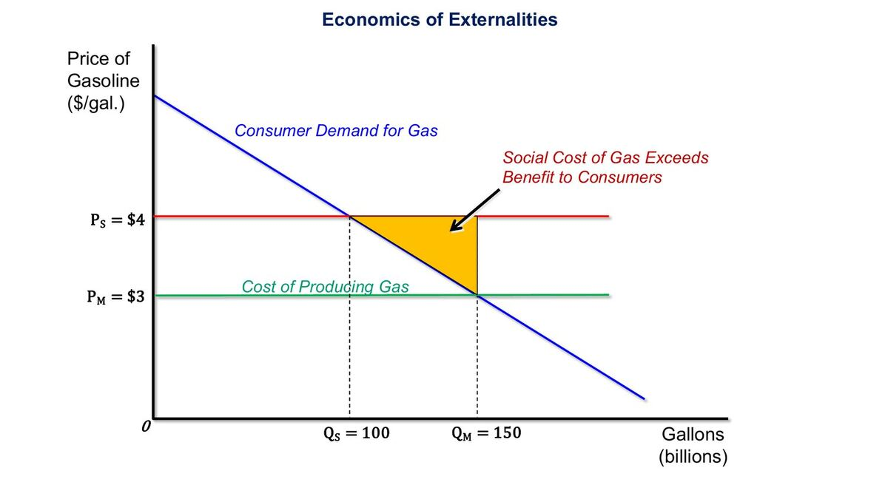